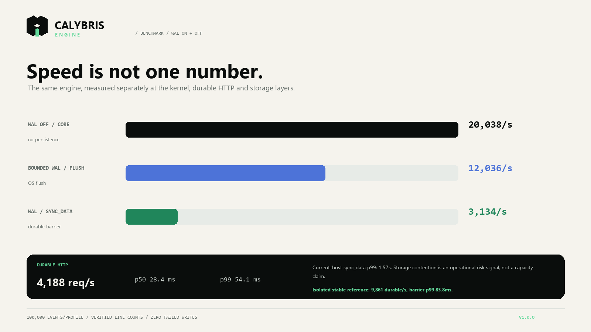
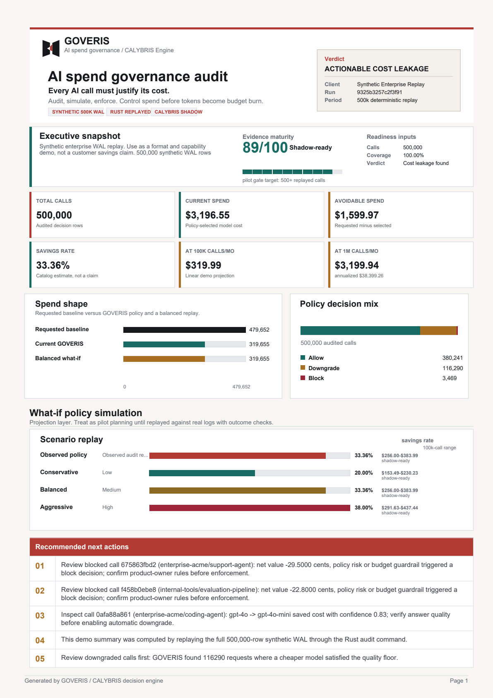

Detect low-risk, high-cost traffic that can be downgraded, cached, or blocked.
GOVERIS — AI spend governance product · Powered by CALYBRIS engine
Control LLM spend before the invoice arrives.
Get your LLM spend audit in 7 days. GOVERIS deploys a private Docker image inside your VPC, observes model call metadata, and produces a board-readable audit with what-if policy scenarios. No prompt capture. No log export.
Rust + Axum gateway
CALYBRIS proof-carrying engine
231 tests fault injection + proptest + loom
OpenAI · Anthropic · Google compatible
Decision trace
Every call gets an audit reason.
Policy replay
Compare cost, quality, and downgrade pressure.
Client package
Deliver PDF, HTML, JSON, and artifact hashes.
Measured, not blended
Speed is reported at the layer where it was measured.
Kernel, durable HTTP, and storage profiles are separate experiments. These are three-run or complete-profile medians from one local host—not a cloud SLO and not a fastest-run screenshot.
- Integer kernel
- 4.46M/s 3-run median
- Durable HTTP
- 4,188 req/s c=128 · 1 ms mock
- HTTP p99
- 54.1 ms 15,000 requests · 0 failed
- Durable WAL
- 3,134/s current contended host

Open benchmark layer comparison ↗The current-host sync_data barrier p99 was 1.57 s; an isolated stable reference measured 9,861 durable events/s at 83.8 ms barrier p99. We publish the bad run because storage contention is an operational fact, not a footnote.
Engineering proof
231 tests · fault injection · proptest · loom exhaustive concurrency
Hardened
10 critical fixes: WAL deadlock, NaN bypass, timing leak, CORS
Instant audit
GET /api/v1/audit/report → JSON + Markdown spend analysis
Executive control
GOVERIS explains where model spend went, then tests what should change.
The first product is not another chat wrapper. It is a private shadow-replay pilot for teams that already use LLMs and need evidence before they change a production route.
Show the confidence, risk, latency, and quality constraints behind each decision.
Run in shadow mode first, then graduate proven rules into the proxy path.
01
Mirror metadata
Keep prompt content local while a private image observes decision envelopes.
02
Simulate policy
Compare conservative, balanced, and aggressive routing scenarios.
03
Shadow gateway
Replay traffic safely before enforcing model downgrades or blocks.
04
Control spend
Move from report to governed OpenAI-compatible inference.
The problem
LLM bills are made of thousands of unreviewed decisions.
Teams see the invoice, but not the call-level economics: why a premium model was used, whether a cheaper model would satisfy the quality floor, or which tenant is creating avoidable spend.
Expensive models are used for low-value or repeated work.
There is no durable record explaining why each AI call was allowed.
Confidence, quality floor, risk pressure, and tenant budget live outside routing.
Client deliverable
From mirrored traffic metadata to a board-readable spend audit.
A private Docker image runs inside your environment, evaluates a metadata-only mirror, and keeps raw events local. Goveris produces aggregate findings and what-if policy scenarios without asking your team to export prompt logs.
Inputs
Mirrored model, token, latency, tenant, workflow, risk, and confidence envelopes.
Analysis
Savings estimate, downgrade pressure, negative-net calls, audit coverage.
Output
Local dashboard, aggregate review, recommendations, and what-if policy table.
GOVERIS spend audit
shadow replay
Audit coverage
100%
Premium pressure
actionable
Policy scenarios
3 what-if paths
Client gets
Local dashboard, aggregate findings, policy recommendations
Proof trail
input hash, generated artifacts, replayable decisions
deployment private Docker image data boundary customer VPC traffic mode metadata-only mirror prompt capture disabled enforcement off during replay
Sample audit PDF
Graphical report package
A client-facing example with spend shape, what-if policy simulation, tenant attribution, recommendations, and artifact hashes. The sample is deliberately marked as pilot data, not a production savings claim.
Total calls
500,000
Audit coverage
100%
Catalog estimate
33.36%
Requested baseline
$4,796.52
Current GOVERIS
$3,196.55
Balanced replay
$3,549.42
Observed
Conservative
Balanced
Aggressive

Platform workflow
Start with evidence. Enforce only after the policy survives replay.
Cost governance report
Find avoidable model spend without touching production traffic.
What-if simulation
Estimate conservative, balanced, and aggressive policy effects.
CALYBRIS gateway
Allow, downgrade, block, cache, or retry each model call.
Private Docker shadow replay
Observe the economics without handing over production logs.
We provision a private image in your registry or VPC. Your gateway mirrors only the decision envelope—not prompt or response content. Calybris evaluates each call in non-enforcing mode and stores the replay trail inside your boundary.
IMAGEprivate-registry / goveris-shadow:pilot
INGESTmodel · tokens · latency · tenant · workflow tags
EXCLUDEDprompts · responses · credentials · customer PII
MODEobserve and replay · never alter the live response
OUTPUTlocal ledger · aggregate review · rollout candidates
- 01Deploy beside the gateway
Read-only pilot image; no provider key is required for replay.
- 02Mirror metadata for 7–14 days
Production traffic continues unchanged while Goveris evaluates alternatives.
- 03Review before enforcement
Promote only policies that survive quality, risk, budget, and shadow gates.
Adoption path
Choose your audit depth.
Same-day triage from anonymized logs. Markdown memo, JSON summary, top savings opportunities.
7–14 day private Docker pilot. Shadow replay, tenant breakdown, what-if policy simulation, PDF audit package.
Full proxy mode evaluation. WAL tracing, shadow traffic review, canary rollout plan, controlled enforcement.
One-command pilot
Deploy in your VPC with a single docker compose.
No agent installation. No log export. No prompt capture. Point your app at GOVERIS, mirror metadata for 7–14 days, then pull the audit report from the API.
docker compose -f docker-compose.pilot.yml up -d
Point your app to http://goveris:8080/v1/chat/completions
GET /api/v1/audit/report → JSON + Markdown audit package
Start here
Get your LLM spend audit in 7 days.
Send your monthly call volume and provider stack. I'll deploy a private Docker pilot in your VPC and return a board-readable audit package. No prompt capture. Metadata-only observation.
Interactive decision lab
Change the workload. See the policy decision and its proof.
Pick a realistic workload below. The page calls the deployed Calybris API when one is available and falls back to the same deterministic public-demo policy in the browser. No provider key is exposed and no paid model call is made.
Decision ledger
Order-status request / support-emea / standard
- Requested
- claude-sonnet-4-6
- Selected
- pending
- Net value
- --
- Expected value
- --
- Estimated cost
- --
- Quality floor
- --
- Risk penalty
- --
- Proof fingerprint
- --
Decision reason
Waiting for evaluation.
Fallback chain: --
/api/v1/route
not evaluated
Waiting for a policy decision...
Synthetic data, disclosed
Realistic shape without pretending it is customer traffic.
The public dataset is generated deterministically from bounded distributions for token volume, model mix, tenant concentration, quality floors, confidence, and risk. It contains no prompts, customer logs, or personal data. Cost figures use the checked-in model catalog; savings are scenario estimates, not a production claim.
- Public sample
- 500 decisions
- Report replay
- 500,000 decisions
- Deterministic seed
- 73,120,526
- Workload mix
- 5 tenants / 5 use cases